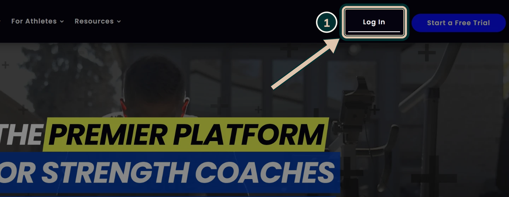
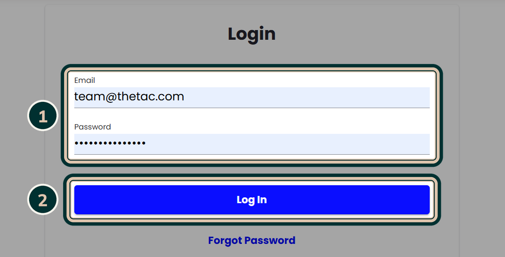
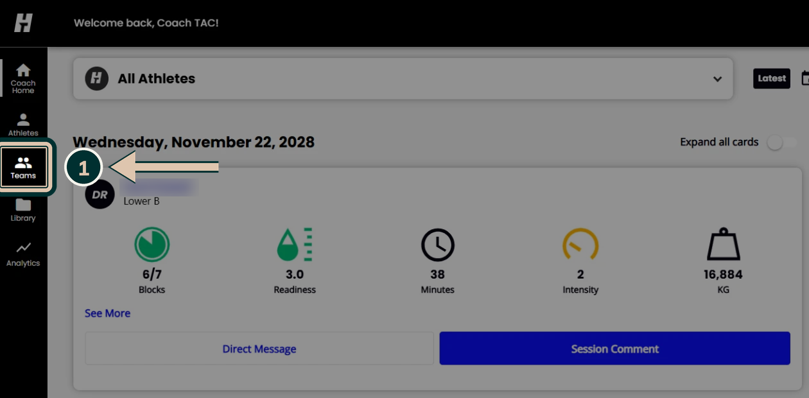
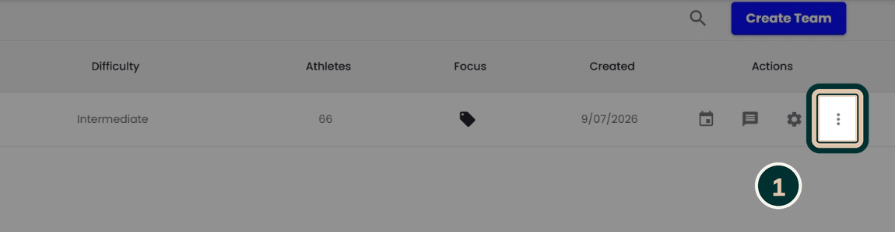
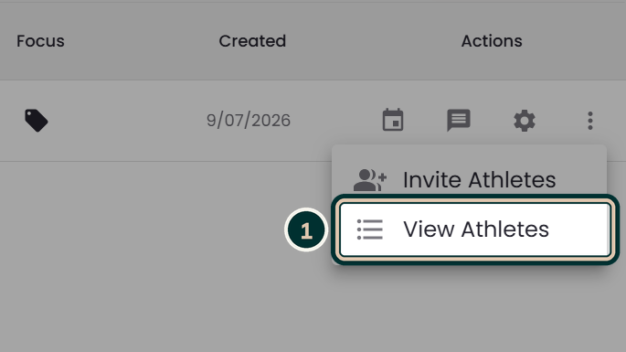
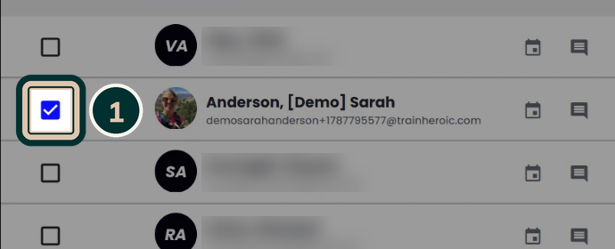
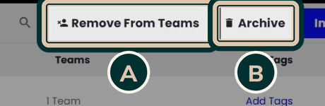
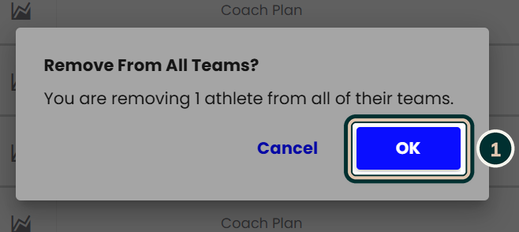

TrainHeroic
Use this when a member leaves or pauses. It takes about a minute, and every step is shown below with the button to click circled.
Go to trainheroic.com and click Log In in the top right corner.

1The team email and password are saved on the gym computer, so they should fill in by themselves. 2Click Log In.
The password is deliberately not written in this guide. If it doesn't fill in, ask Chris.

You'll land on the Coach Home dashboard. Click Teams in the black sidebar on the left.

On My Teams, find Teneriffe Athletic Club Strength and click the three dots at the far right of the row.

From the menu that pops up, choose View Athletes.

1Tick the checkbox to the left of the athlete's name. The list is sorted by surname, or use the magnifying glass to search. Then choose ARemove From Teams or BArchive at the top. Not sure which? Use the boxes below.


Use when they're still a gym member but won't be using TrainHeroic for now, e.g. they're pausing or switching to classes only.
We're not charged for archived athletes, and it's easy to bring them back later.
Use when they've left the gym and won't be using TrainHeroic again.
Takes them off all of their teams. They stay in the athlete list, showing 0 Teams.
A popup asks you to confirm. Click OK.

Check the athlete now shows 0 Teams, or no longer appears in the Active list if you archived them.